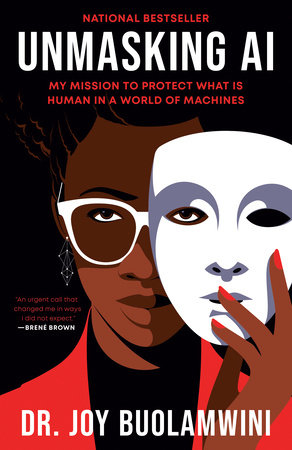

As we began working on this project, we made sure to have various themes from the text titled Unmasking AI: My Mission to Protect What is Human in a World of Machines by Dr. Joy Buolamwini in mind. Dr. Joy Buolamwini’s story taught us about how technology interacts with our fragile social structures and ideals. Her work emphasized a rejection of the norm and a willingness to question the status quo. In beginning this project, we made sure to adhere to Dr Buolamwini’s philosophy and label our data based on what we believed objectively represented each category.
The extra attention we paid to making sure that every data input we gave the machine was as impartial and accurate as possible is the result of the awareness we gained by reading Dr Buolamwini’s work. We know that if the data that is being given to a machine carries implicit biases, the machine will inherit those same biases. This can have palpable negative impacts on certain groups who were underrepresented in the data used to train the machine. In Unmasking AI, Dr Buolamwini discovered that her face was not being recognized by facial recognition technology because the technology had been trained using data in which her demographic was underrepresented. She referred to this phenomenon as the coded gaze, defined as “The preferences of those who have the power to choose what subjects to focus on.” (Buolamwini 51)
In our project we acted as the masters of our own coded gaze. We held the sole power to determine what qualified as a certain amount of fingers just like the so-called coded gaze has the power to determine what data sets inform machine learning models. The power we have to determine what data is used to inform our machine is not comparable to the power of others who are labeling data for more important sets of information. Despite the differences in the importance of the data, the principle laid out by Dr Buolamwini still holds true. No matter how insignificant the data being labeled is, it is never neutral because, as Dr Buolamwini says, “Classification systems do not come out of nowhere.” (Buolamwini 81)
As we began to test our machine by holding up different numbers of fingers, we saw the model respond with varying levels of success. When we gave the machine a specific input that it was prepared for, holding up a specific number of fingers, we experienced a true positive. However when we showed the machine other parts of our arms it was still required to classify the images. This led to significant decreases in accuracy. We had created a system where only four categories existed, therefore the machine could only use four labels. Dr Buolamwini detailed an opposite phenomenon in Unmasking AI. If the facial recognition technology was only trained on data that classified certain faces, when it was presented with a face it did not recognize it would fail to classify it all together, rather than classifying it as a false face.
The idea that we decided we wanted to teach a Teachable Machine was how many numbers we were holding up with our fingers. We thought that this was a great idea because anyone who had their webcam on would be able to quickly change the number of fingers they are holding up and test if our algorithm was working properly or not. Instead of requiring props or other images, we thought it would be pretty easy for anyone to test out at any time.
To overview our project, we created a Teachable Machine project which recognizes how many fingers are held up on one hand. Our model allows a user to hold up fingers in the range of 0 to 3, and the machine will quickly recognize how many fingers you are displaying. We tried to allow this to occur from a variance of ranges, but found that the model was most accurate when fingers are displayed closer to the webcam.
Originally, we wanted to do 0-5 fingers for a total of 6 classes for 0-5 fingers being held up. We initially loaded up our classes by putting 1000 pictures in each class. Once we had all of the pictures setup, we decided to try to run our machine, and found that it took several minutes to simply compile and create the model. This was extremely inefficient, and we realized that we were feeding too much data. To combat this, we lowered the number to around 500. When we did this, we still ran into a lot of trouble with runtime because we were still using way too much data. Additionally, due to there being a total of 6 classes our machine was not the most accurate which was frustrating to try to fix. We also ran into problems with the way numbers were being held up with fingers. Some people represent a number like three on their fingers in different ways, eg: hold up different fingers, rotate hands a different way, etc. It was very difficult to make our model accurately showcase this, which is something we need to improve on in the future. (UPDATE: We did this with our new model by including more varied images in our Final Project).
After trial and error, we decided to reduce some complexity. We instead did 0-3 fingers to only make it 4 classes. This is so that our machine would be easier to train and simpler for users to use. Also, we found that the sweet spot for the number of data for the amount of classes we had was around 100 pictures. After we took these 100 pictures, we finally trained our model again and it ran efficiently and relatively accurately. Below is a picture of the class setup that we implemented. It is pretty simple, but we wanted to showcase the power of Teachable Machine and how it can quickly recognize different images, and we thought throwing up different numbers of fingers would accurately be able to represent that.
For our final iteration in this project, we made our model much more accurate, which is described on the next tab titled "Try our Model!". Essentially, we changed the data that was provided by going above 100 to around 400. We thought the sweet spot was 100 originally, but when testing with other people we found that our model wasn't accurate. In other words, with such little data, our model was effectively only working when we tried it ourselves. We made lots of improvements, and realized that data variance is important. Please feel free to read more!